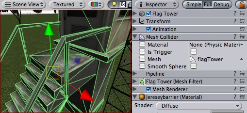

Previous
Previous
The Mesh Collider takes a Mesh Asset and builds its Collider based on that mesh. It is far more accurate for collision detection than using primitives for complicated meshes, but it cannot collide with other Mesh Colliders.

A Mesh Collider used on the flag tower object
Properties
| Property: | Function: |
|---|---|
| Reference to the PhysicMaterial that determines how this Collider interacts with others. | |
| If enabled, this Collider is used for triggering events, and is ignored by the physics engine. | |
| Reference to the Mesh to use for collisions. | |
| When this is enabled, collision mesh normals are smoothed. You should enable this on smooth surfaces eg. rolling terrain without hard edges to make sphere rolling smoother. |
Details
The Mesh Collider builds its collision representation from the Mesh attached to the GameObject, and reads the properties of the attached Transform to set its position and scale correctly.
Collision meshes use backface culling. If an object collides with a mesh that will be back face culled graphically it will also not collide with it physically.
Colliders work with Rigidbodies to bring physics in Unity to life. Whereas Rigidbodies allow objects to be controlled by physics, Colliders allow objects to collide with each other. Colliders must be added to objects independently of Rigidbodies. A Collider does not necessarily need a Rigidbody attached, but a Rigidbody must be attached in order for the object to react to collisions.
When a collision between two Colliders occurs and if at least one of them has a Rigidbody attached, three collision messages are sent out to the objects attached to them. These events can be handled in scripting, and allow you to create unique behaviors with or without making use of the built-in Ageia physX engine.
Triggers
An alternative way of using Colliders is to mark them as a Trigger, just check the IsTrigger property checkbox in the Inspector. Triggers are effectively ignored by the physics engine, and have a unique set of three trigger messages that are sent out when a collision with a Trigger occurs. Triggers are useful for triggering other events in your game, like cutscenes, automatic door opening, displaying tutorial messages, etc. Use your imagination!
Be aware that in order for two Triggers to send out trigger events when they collide, one of them must be attached to a Rigidbody. For a Trigger to collide with a normal Collider, one of them must have a Rigidbody attached. For a detailed chart of different types of collisions, see the collision action matrix in the Advanced section below.
Friction and bouncyness
Friction, bouncyness and softness is defined in the physic material. The Standard Assets contain the most common physic materials. To use one of them click on the material popup and select eg. Ice. You can also create your own physic materials and tweak all friction values.
Hints
- Mesh Colliders cannot collide with each other. Therefore, they are most useful for background objects like environment geometry.
- It is usually better to use primitive Colliders for objects under physics control.
- When you attach a Mesh Collider to a Game Object, its Mesh property will default to the mesh being rendered. You can change that by assigning a different Mesh. To add multiple Colliders for an object, create child objects and attach a Collider to each one. This allows each Collider to be manipulated independently.
- You can look at the gizmos in the Scene view to see how the Collider is being calculated on your object.
- Colliders do their best to match the scale of an object. If you have a non-uniform scale (a scale which is different in each direction), only the Mesh Collider can match completely.
Advanced
Collider combinations
There are numerous different combinations of collisions that can happen in Unity. Each game is unique, and different combinations may work better for different types of games. If you're using physics in your game, it will be very helpful to understand the different basic Collider types, their common uses, and how they interact with other types of objects.
Static Collider
These are Game Objects that do not have a Rigidbody attached, but do have a Collider attached. These objects should remain still, or move very little. These work great for your environment geometry. They will not move if a Rigidbody collides with them.
Rigidbody Collider
These Game Objects contain both a Rigidbody and a Collider. They are completely affected by the physics engine through scripted forces and collsions. They might collide with a Game Object that only contains a Collider. These will likely be your primary type of Object in games that use physics.
Kinematic Rigidbody Collider
This Game Object contains a Collider and a Rigidbody which is marked IsKinematic. To move this Object, you modify its Transform component, rather than applying forces. They're similar to Static Colliders but will work better when you want to move the Collider around frequently. There are some other specialized scenarios for using this Object.
This object can be used for circumstances in which you would normally want a Static Collider to send a trigger event. Since a Trigger must have a Rigidbody attached, you should add a Rigidbody, then check IsKinematic. This will prevent your Object from moving from physics influence, and allow you to receive trigger events when you want to.
Kinematic Rigidbodies can easily be turned on and off. This is great for creating ragdolls, when you normally want a character to follow an animation, then turn into a ragdoll when a collision occurs, prompted by an explosion or anything else you choose. When this happens, simply turn all your Kinematic Rigidbodies into normal Rigidbodies through scripting.
If you have Rigidbodies come to rest, so they are not moving for some time, they will "fall asleep". That is, they will not be calculated during the physics update since they are not going anywhere. If you move a Kinematic Rigidbody out from underneath normal Rigidbodies that are at rest on top of it, the sleeping Rigidbodies will "wake up" and be correctly calculated again in the physics update. So if you have a lot of Static Colliders that you want to move around and have different object fall on them correctly, use Kinematic Rigidbody Colliders.
Collision action matrix
Depending on the configurations of the two colliding Objects, a number of different actions can occur. The chart below outlines what you can expect from two colliding Objects, based on the components that are attached to them. Some of the combinations only cause one of the two Objects to be affected by the collision, so keep the standard rule in mind — physics will not be applied to objects that do not have Rigidbodies attached.
Collision detection occurs and messages are sent upon collision
| ||||||
| Static Collider | Rigidbody Collider | Kinematic Rigidbody Collider | Static Trigger Collider | Rigidbody Trigger Collider | Kinematic Rigidbody Trigger Collider | |
| Static Collider | • | |||||
| Rigidbody Collider | • | • | • | |||
| Kinematic Rigidbody Collider | • | |||||
| Static Trigger Collider | ||||||
| Rigidbody Trigger Collider | ||||||
| Kinematic Rigidbody Trigger Collider | ||||||
Trigger messages are sent upon collision
| ||||||
| Static Collider | Rigidbody Collider | Kinematic Rigidbody Collider | Static Trigger Collider | Rigidbody Trigger Collider | Kinematic Rigidbody Trigger Collider | |
| Static Collider | • | •
| ||||
| Rigidbody Collider | • | • | •
| |||
| Kinematic Rigidbody Collider | • | • | •
| |||
| Static Trigger Collider | • | • | • | •
| ||
| Rigidbody Trigger Collider | • | • | • | • | • | •
|
| Kinematic Rigidbody Trigger Collider | • | • | • | • | • | • |